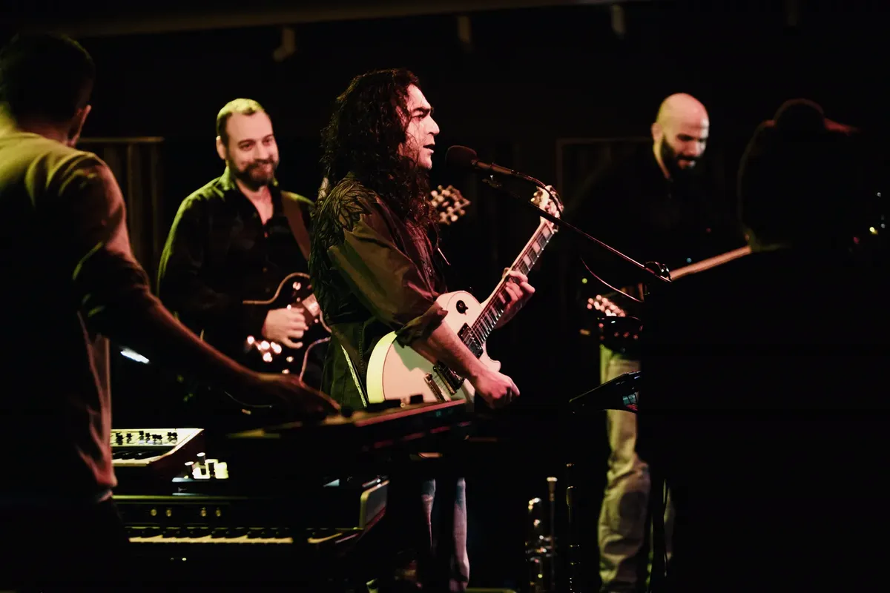

۱۳۸۳
شروع با گیتار بیس
فعالیت موسیقایی سینا با نوازندگی گیتار بیس آغاز شد و با مسترکلاسهای بابک ریاحیپور ادامه پیدا کرد.
سردستهی Dingwall NG2؛ جایی که فرم، فلز و کششِ سیم قبل از شنیدهشدنِ هر نت، شخصیت صدا را میسازند.
موسیقی سینا را از یک پلیر معمولی جدا میکنیم؛ صدا اینجا مثل یک میدان در تاریکی نفس میکشد. قطعهها و اجراها از این نقطه شنیده میشوند.
↗ شنیدن در Bandcampچند لحظه از نور، بدن و صدای زنده؛ نه یک گالری، یک نوارِ حافظه.

یک برش کوتاه از جزئیات مکانیکی ساز؛ تصویری که بین آرشیوِ صحنه و لمسِ ساز پل میزند.
نوازندهی گیتار بیس، آهنگساز و مهندس صدای زنده؛ مسیری که از سال ۱۳۸۳ بین ساز، گروه و اتاق صدا حرکت کرده است.
فعالیت موسیقایی سینا با نوازندگی گیتار بیس آغاز شد و با مسترکلاسهای بابک ریاحیپور ادامه پیدا کرد.
گذراندن دورههای مهندسی صدا زیر نظر روزبه اسماعیلی و سپهر حقیقی، مسیر نوازندگی را به کارِ استودیو و اجرای زنده پیوند زد.
از مونهد و ماخولا تا کارنیوالسک، مگو و جلیل؛ در سبکهای راک فارسی، آلترنیتیو، تجربی، پراگرسیو و فیوژن.
حضور روی صحنه بهعنوان نوازندهی بیس با سیاوش شمس، فتانه و کوروس؛ در کنار فعالیت حرفهای بهعنوان مهندس صدای زنده.
برای اجرا، تولید موسیقی یا همکاری در مهندسی صدای زنده.